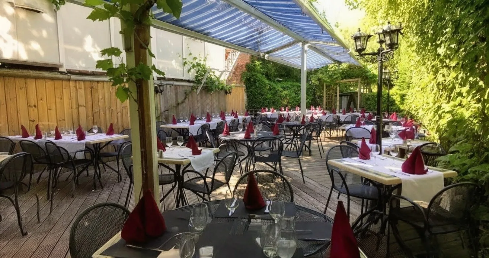
Restaurant italien · Laeken
Le Cuneo
Pizzas au feu de bois, pâtes, et un jardin caché à l'arrière.
Sur place, au jardin quand il fait beau, ou à emporter. Ouvert midi et soir du mercredi au samedi, et le dimanche midi.
4,5 sur 5 · 804 avis Google
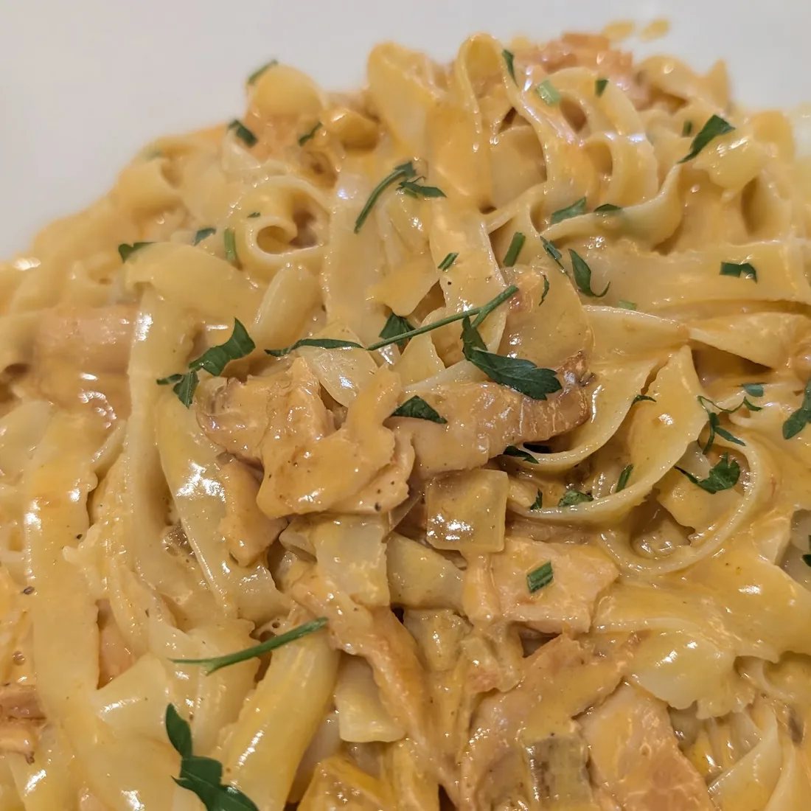
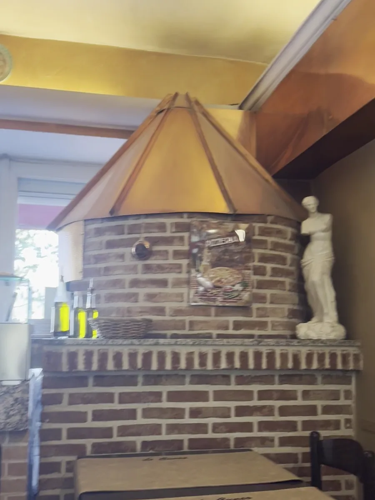
Le four
La pizza cuit au feu de bois
Pâte fine, bords qui gonflent et se tachent au feu : les pizzas du Cuneo passent par le four en briques. On les mange au jardin, en salle, ou on les emporte dans leur boîte.
« Les pizzas au feu de bois sont vraiment top, bien garnies, bien cuites […] »
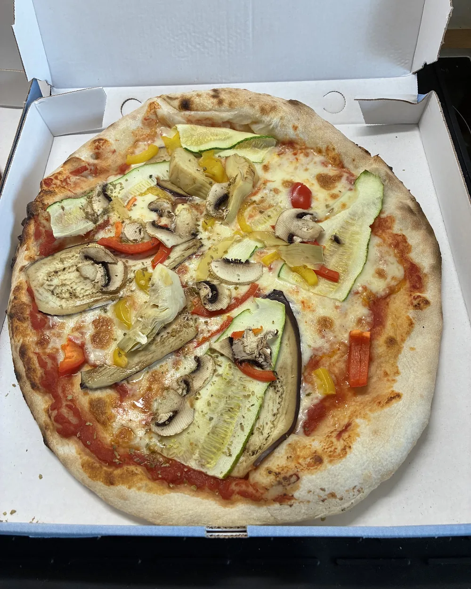
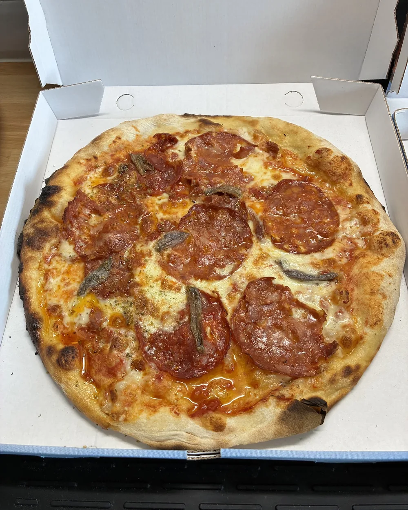
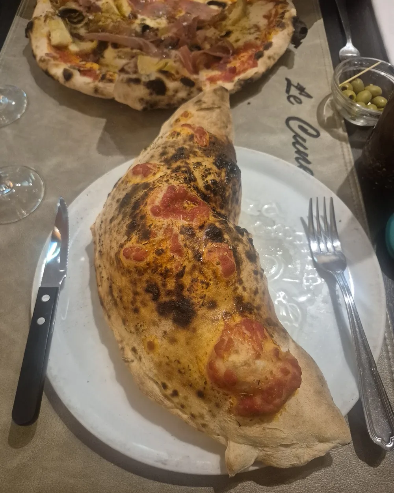
La cuisine
La carte, racontée par ceux qui la mangent
Pas de liste recopiée ici : les plats que les clients citent dans leurs avis, avec leurs mots. La carte complète et ses prix se lisent sur place ou s'obtiennent au téléphone.
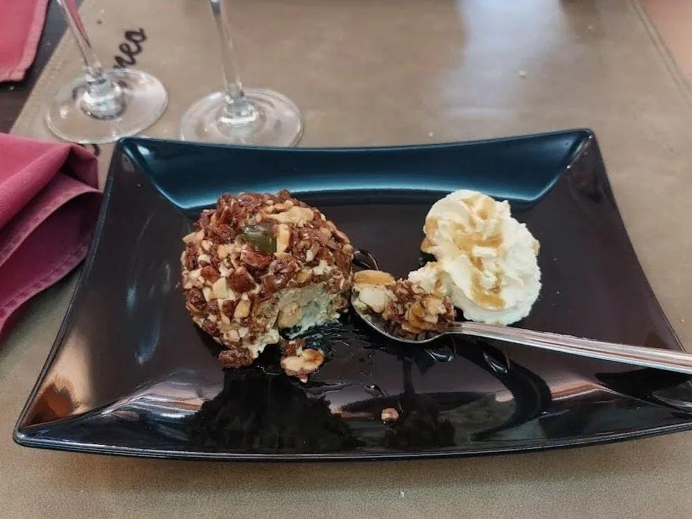
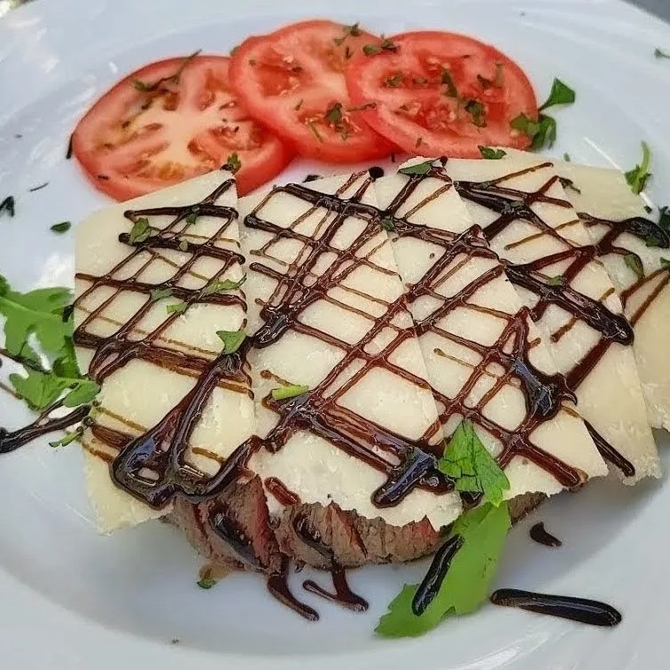
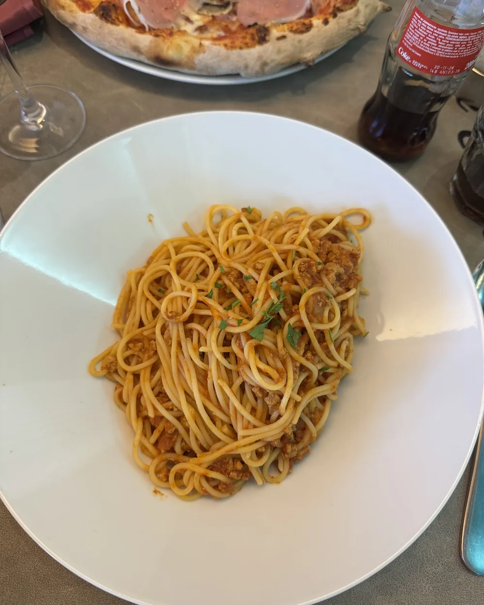
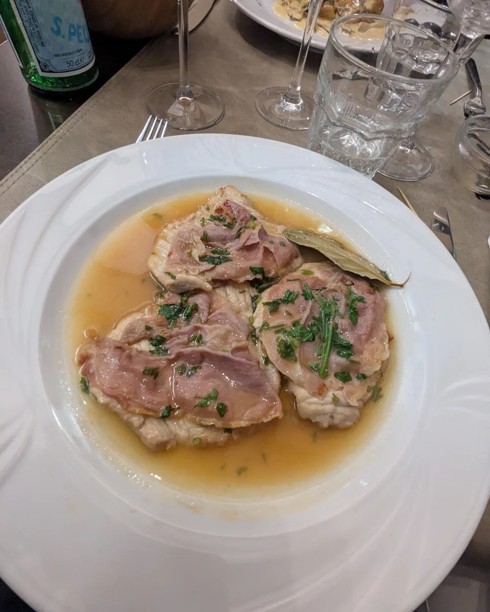
En ligne, en une minute
Réserver une table
Choisissez le jour, le service et le nombre de couverts : les créneaux restent dans les heures d'ouverture. Le dimanche midi, la salle se remplit : un client venu sans réserver l'a trouvée complète.
Le lieu
Un jardin caché à l'arrière
L'enseigne le dit en toutes lettres : « Jardin à l'arrière ». Derrière la façade de l'avenue, des tables nappées de blanc sous la pergola et la verdure. Dedans, une salle à arcades peintes, sous un plafond de ciel.

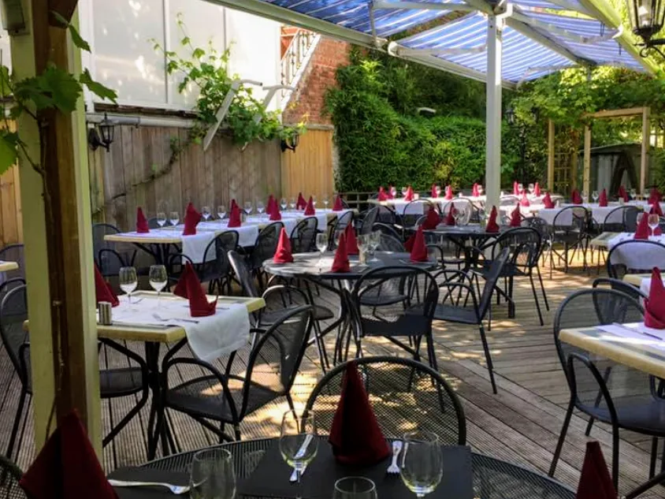
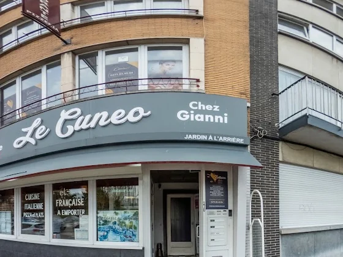
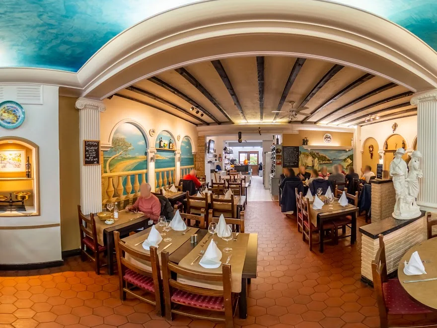
« Et quand il fait beau, manger dans le jardin, c’est juste parfait. Une adresse qui fait plaisir, sans prétention, mais avec beaucoup de cœur. »
Avis des clients
« Douze étoiles, si j'avais pu »
Horaires et accès
Midi et soir, dimanche midi compris
Fermé le lundi et le mardi
| lundi | fermé |
|---|---|
| mardi | fermé |
| mercredi | 12 h – 14 h18 h 30 – 22 h 30 |
| jeudi | 12 h – 14 h18 h 30 – 22 h 30 |
| vendredi | 12 h – 14 h18 h 30 – 22 h 30 |
| samedi | 12 h – 14 h18 h 30 – 22 h 30 |
| dimanche | 12 h – 14 h 30 |
1020 Laeken, Bruxelles · près du stade Roi-Baudouin, métro Houba-Brugmann
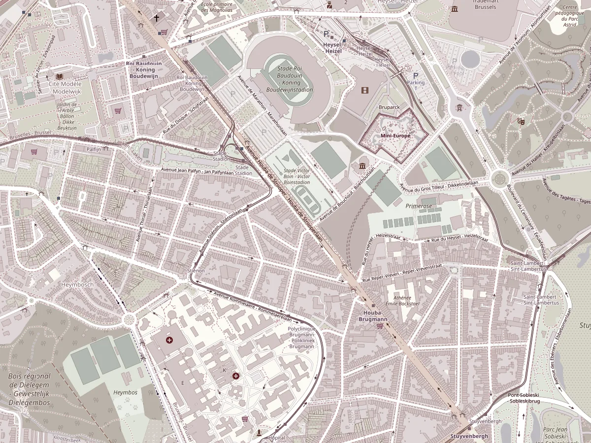
Itinéraire © OpenStreetMapRepérez l'enseigne grise « Le Cuneo, chez Gianni ». Le jardin est derrière.